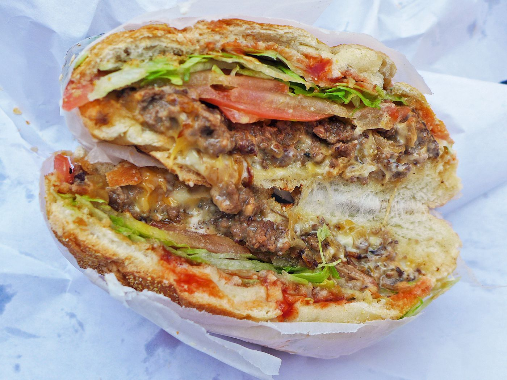

Chopped Cheeseburger

Description
A chopped cheese burger is a variation of the traditional burger that is popular in New York City.
It is made with ground beef that is seasoned and cooked, and then diced or "chopped" into small pieces while it is still in the pan.
The chopped beef is then mixed with melted cheese and served on a bun with toppings like lettuce, tomato, and onion.
Ingredients
- 1 pound ground beef
- 1 teaspoon salt
- 1 teaspoon black pepper
- 4 hamburger buns
- 4 slices American cheese
- Lettuce, tomato, onion, and other desired toppings
Recipe Instructions
- Preheat a large skillet over medium-high heat.
- In a large bowl, mix the ground beef, salt, and pepper until well combined.
- Divide the mixture into 4 equal portions and form into patties.
- Place the patties in the skillet and cook for 3-4 minutes on each side, or until they are cooked to your desired level of doneness.
- Using a spatula or a pair of kitchen scissors, chop the cooked patties into small pieces while they are still in the pan.
- Add the cheese to the pan and mix it with the chopped beef until the cheese is melted and evenly distributed.
- Assemble the burgers by spooning the chopped beef and cheese mixture onto each bun and topping with lettuce, tomato, onion, and any other desired toppings.
- Serve immediately and enjoy!
Home